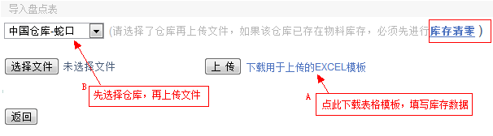
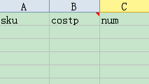
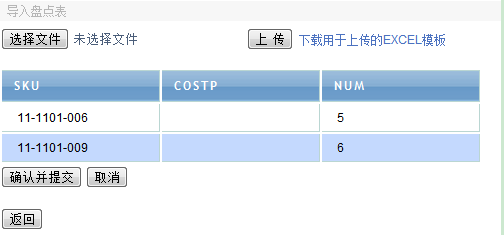

一、清库，对已经使用了一段时间的仓库进行重新盘点校正库存，如果是这种情况，在导入盘点表之前，需要进行多一步操作，就是盘存清零，如第一幅图所示，库存清零的页面如下，选择仓库，然后确定即可，成功后，该仓库所有SKU的库存都是0，然后可以再导入新盘点的库存表格：

打开下载的模板，会看到有三列内容。
Sku ：产品代码。
Costp ：成本价，（此列可不填，填则修改产品的costp，不填则不会修改）。
Num ：数量。

填写好后，回到系统页面，首先选择仓库，接着上传文件，导入后，如果系统检测数据无测，确定提交即可，如下：
